Expressions
Creative work, beyond the stage
Festivals, design, cultural experiences. A chronological record of the projects that taught me to think in story, in scale, and in shared purpose.
Festivals, design, cultural experiences. A chronological record of the projects that taught me to think in story, in scale, and in shared purpose.
Outside of theater, I've spent years bringing large cultural experiences to life: projects that needed creative problem-solving, hard constraints, and the will to move people emotionally.
This page grows as I revisit older work and add new chapters. Newest entries appear on top.
Over the years, I have realised that my hobbies are not really hobbies. They are simply different ways of expressing the same instinct: the desire to create.
Whether it is designing the interiors of a home, planning a house from scratch, helping friends bring their ideas to life, or spending weeks building elaborate decorations for our family's Ganpati festival, I have noticed that every project, regardless of its size, follows almost the same journey.
The materials change · The scale changes · The purpose changes
The process never does.
This section is a collection of those expressions. More importantly, it is a reflection on the way I think when I build something. What follows is that process, broken into the six phases I have come to trust.
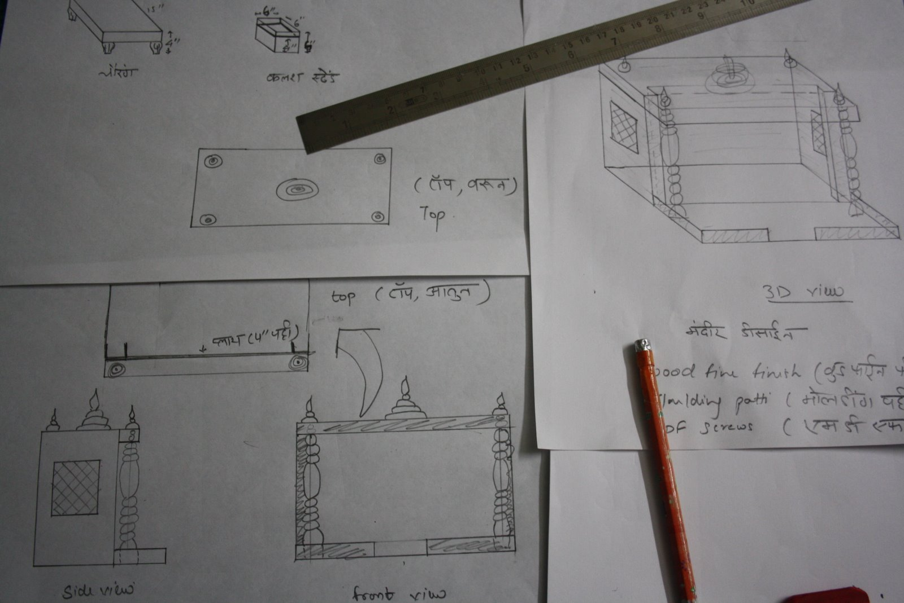
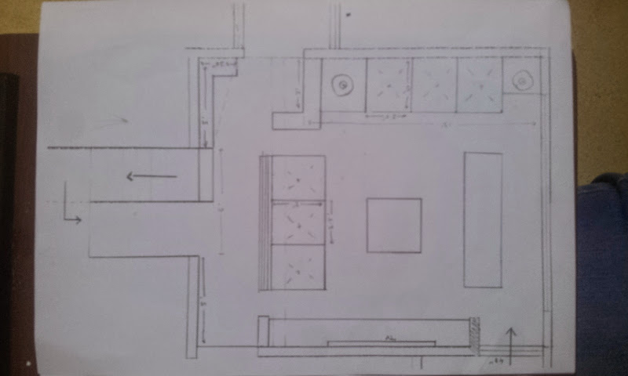
Sometimes it comes from connecting two unrelated things. Sometimes it is inspired by something I have seen. And occasionally, it comes from somewhere I cannot explain: an image that has quietly lived in my mind for years before deciding it is time to exist.
At this stage, nothing is practical. There are no budgets, no constraints, no timelines. Just imagination, a pencil, and paper.
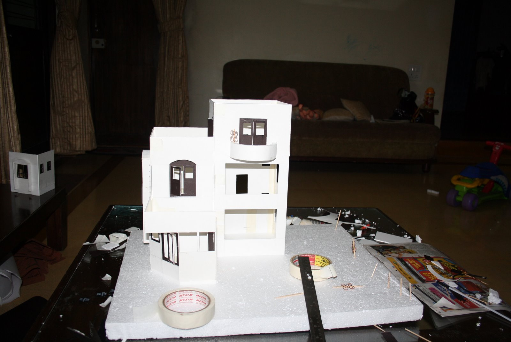
This is where imagination meets practicality. I begin asking difficult questions.
Can this actually be built? What will it cost? How much time will it take? Which approach is realistic? Will the final outcome justify the effort?
This phase is less glamorous than dreaming, but it is incredibly important. It transforms an exciting concept into something that can actually come to life. A sketch becomes a model. A model becomes a room. A room becomes a home.
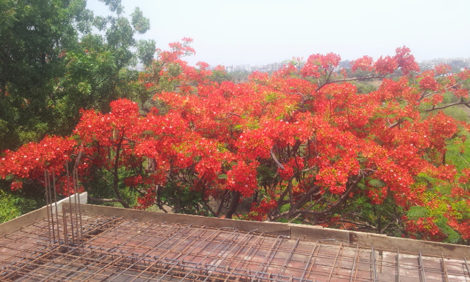
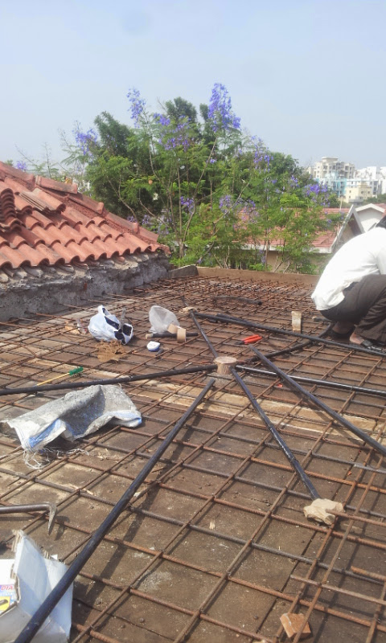
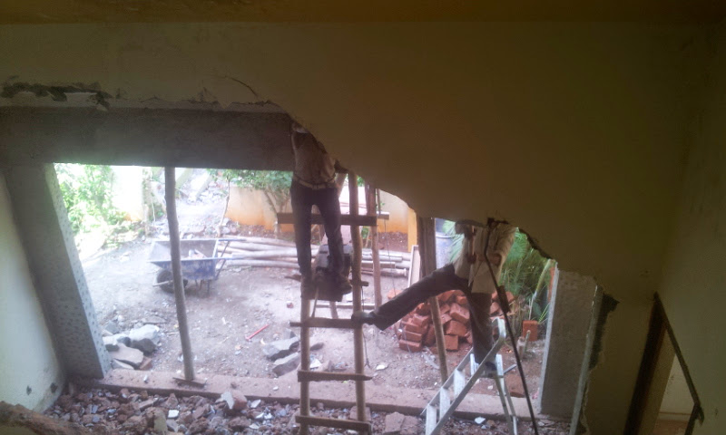
Budgets are limited.
Time is limited.
Materials are unavailable.
Weather interferes.
People have different schedules.
Instead of fighting these realities, I enjoy finding ways around them. This is where frugality meets creativity. Some things are worth investing in. Some things can be achieved differently.
When I built my house, seasons mattered as much as materials. In India, even planning construction around the monsoon can make a significant difference. Every constraint becomes another design parameter rather than an obstacle. Often, the most creative solutions emerge precisely because something wasn't available.
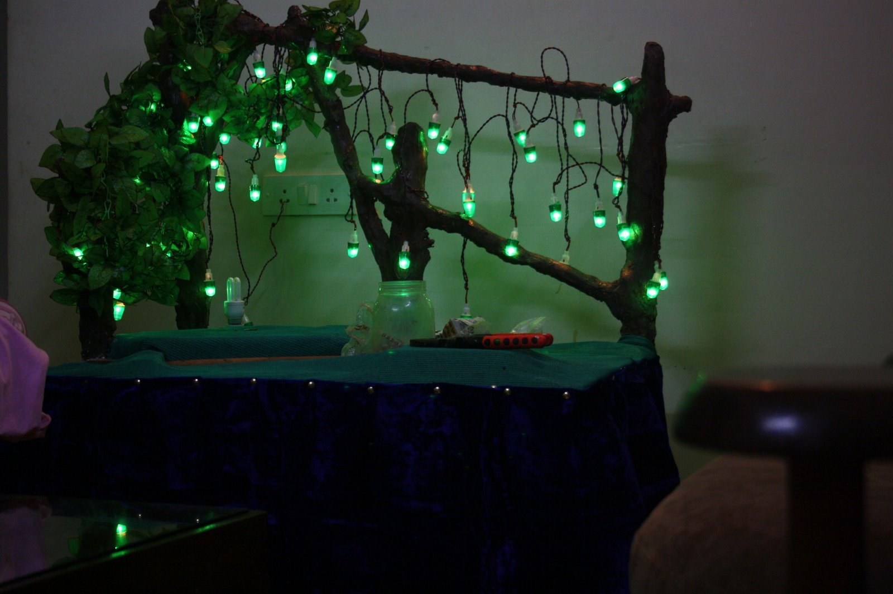
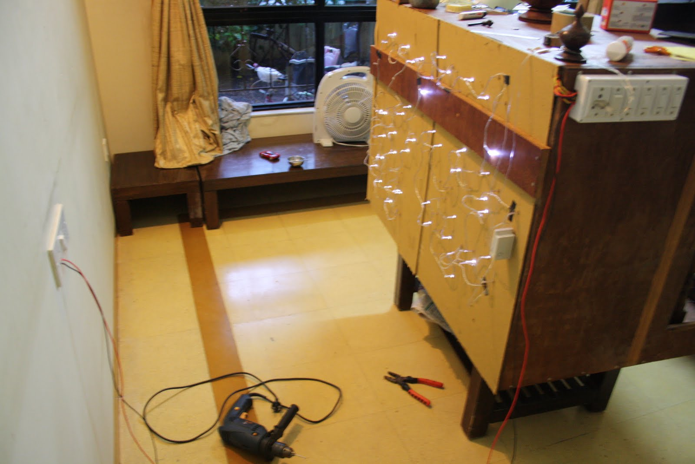
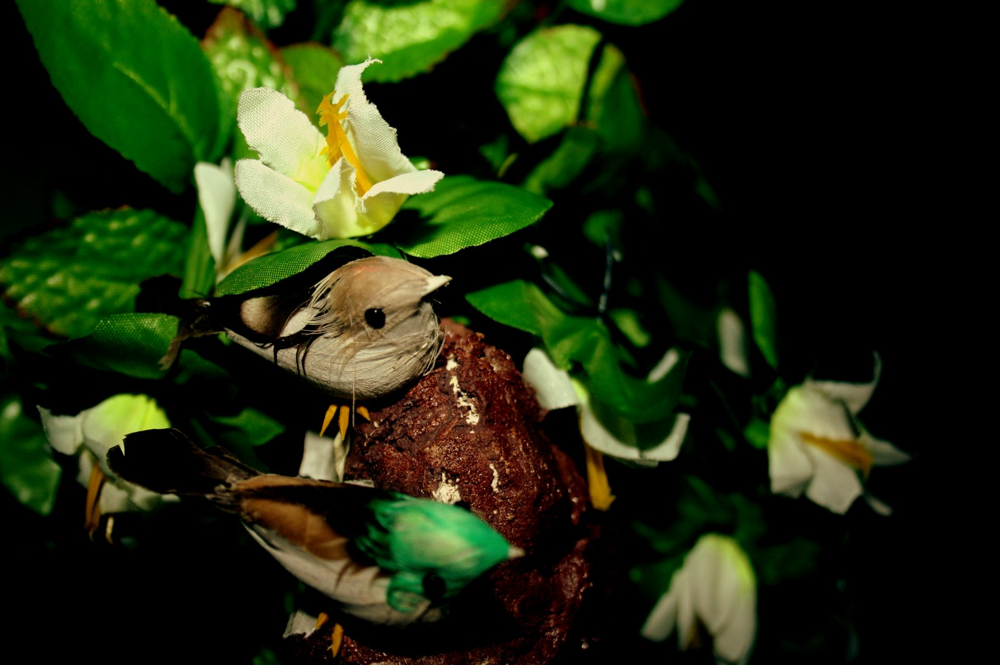
This is perhaps my favourite stage. Once materials start coming together, unexpected combinations appear. Some work beautifully. Others simply don't. The important part is recognising that early, and being willing to change direction without abandoning the vision.
I remember one Ganpati decoration where I reused discarded soft drink bottles to build the background. Initially, it looked terrible. Instead of giving up, I started experimenting with the bottles themselves: different colours, shapes, arrangements. When the light finally hit them at the right angle, the plastic caught it like glass.
Suddenly those bottles became flower petals instead of waste. Nothing had fundamentally changed. Only the perspective had.
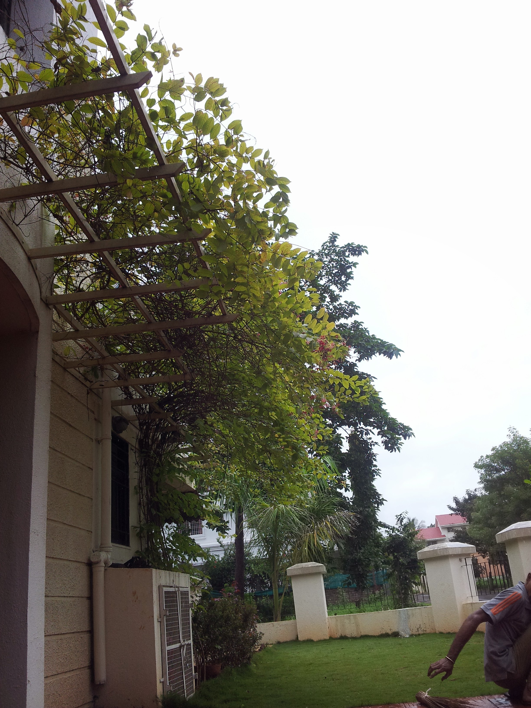
Once the direction is clear, this is where speed matters. Processes become repetitive. Better tools are introduced. Friends and family join in. Tasks are divided. Systems emerge naturally.
The objective is simple. Build.
Every hour invested here converts imagination into something tangible. There is a particular kind of satisfaction in this stage, because every completed piece makes the final picture a little clearer, and every clear piece pulls the next one out faster.
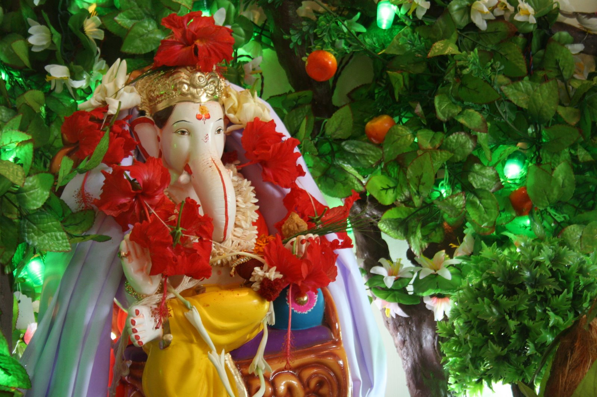
Once everything is assembled, I step back. I squint my eyes. I observe.
Should this corner be darker?
Would warmer lighting change the mood?
Does one colour overpower another?
Should one element disappear altogether?
These are rarely major changes, but collectively they elevate the entire experience. A cooler blue in the sky. A single dimmer bulb. A prop removed from the corner of the frame. The kind of edits nobody would name, but everybody would feel.
Completed Ganpati installations from different years. Different themes, same instinct running through each one.
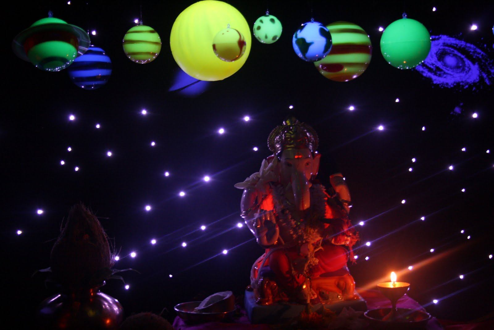
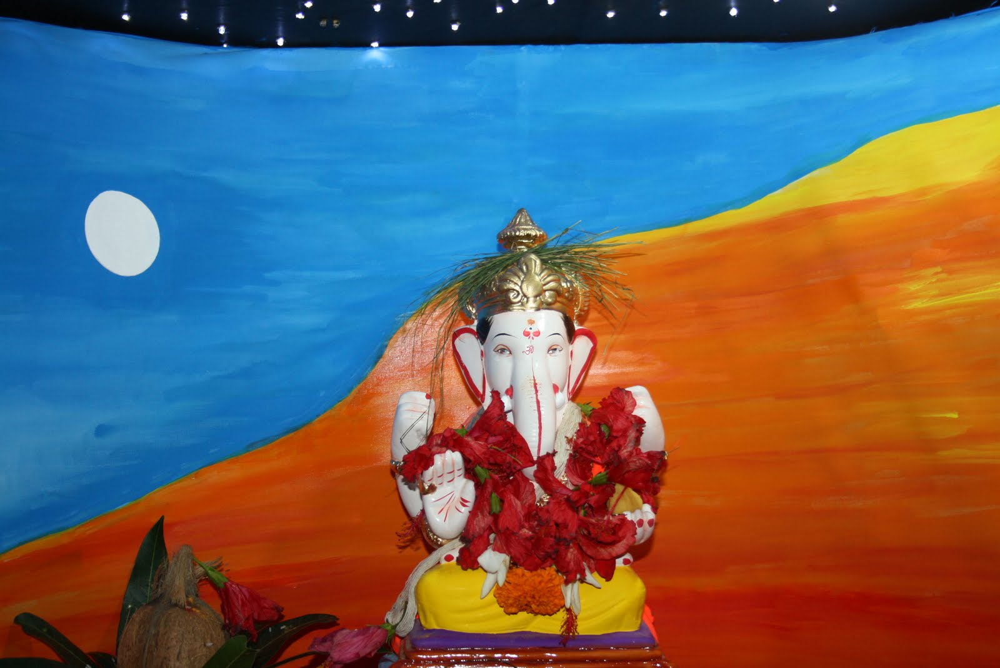
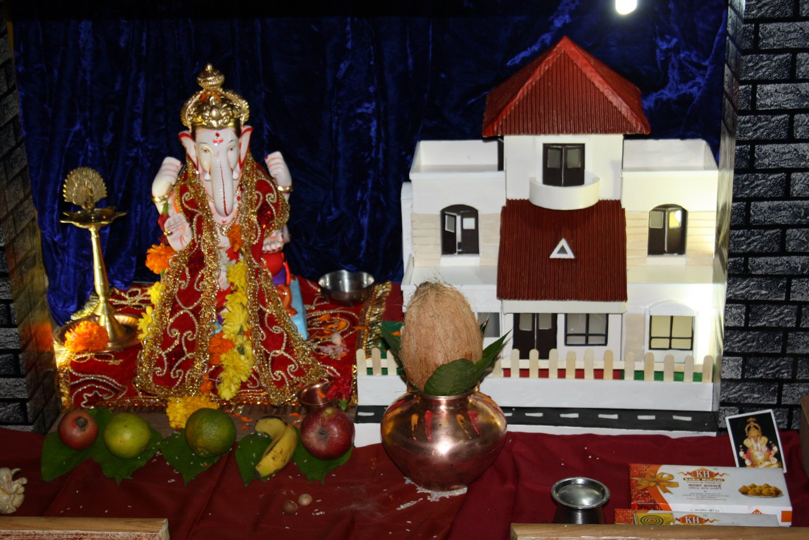
After repeating this process across many different projects, I realised that these six phases are not limited to decoration, architecture, or design. They apply to almost everything we create.
Every project teaches me something new, but the journey somehow remains familiar. That is what this section is about. Not just showcasing what I have built, but sharing the thinking that went into building it.
I would genuinely love to know how others approach their creative work. Do your projects follow a similar journey, or do you think differently?
If you enjoy building things, whether they are physical spaces, art, products, businesses, or experiences, I would love to hear your process.
Every creator has a method. This one just happens to be mine.